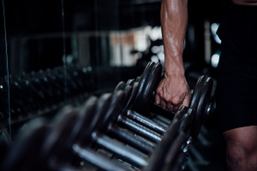
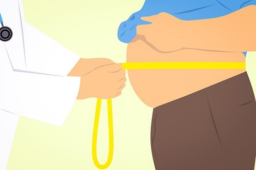

O combate à obesidade envolve uma abordagem multidisciplinar e mudanças de estilo de vida saudáveis. Aqui estão algumas maneiras de enfrentar a obesidade:
Alimentação saudável: Adote uma dieta equilibrada, rica em frutas, vegetais, grãos integrais, proteínas magras e gorduras saudáveis. Evite alimentos processados, ricos em gorduras saturadas, açúcares adicionados e sódio. Controle as porções e limite a ingestão de calorias. Consultar um nutricionista pode ser útil para obter um plano alimentar personalizado.
Atividade física regular: Faça exercícios físicos regularmente para ajudar a queimar calorias, melhorar o condicionamento cardiovascular, fortalecer os músculos e promover o bem-estar geral. Escolha atividades que você goste, como caminhar, correr, nadar, praticar esportes ou fazer aulas de dança. Procure a orientação de um educador físico ou personal trainer para desenvolver um programa adequado às suas necessidades.
Atividade física regular: Faça exercícios físicos regularmente para ajudar a queimar calorias, melhorar o condicionamento cardiovascular, fortalecer os músculos e promover o bem-estar geral. Escolha atividades que você goste, como caminhar, correr, nadar, praticar esportes ou fazer aulas de dança. Procure a orientação de um educador físico ou personal trainer para desenvolver um programa adequado às suas necessidades.

Mudanças comportamentais: Identifique os hábitos alimentares e comportamentais negativos e trabalhe para modificá-los. Isso pode incluir comer devagar, controlar as porções, evitar comer por motivos emocionais e estabelecer metas realistas. Ter apoio de um psicólogo ou terapeuta pode ajudar na mudança de comportamento e na superação de desafios emocionais relacionados à obesidade.
Acompanhamento médico: Consulte um médico regularmente para avaliar sua saúde, monitorar o progresso do seu peso e receber orientações personalizadas. Dependendo da sua situação, o médico pode encaminhar para outros profissionais de saúde, como nutricionistas, endocrinologistas, psicólogos, entre outros, para um tratamento abrangente.
Suporte social: Busque apoio de amigos, familiares ou grupos de apoio para ajudá-lo na jornada de combate à obesidade. Ter um sistema de suporte encorajador pode fazer uma diferença significativa na motivação e aderência ao estilo de vida saudável.
Medicamentos e cirurgia: Em casos de obesidade grave ou quando outras medidas não foram suficientes, medicamentos ou cirurgia bariátrica podem ser considerados. Essas opções devem ser discutidas com um médico especialista e são reservadas para casos específicos em que os riscos e benefícios são avaliados cuidadosamente.

Lembre-se de que cada pessoa é única e o tratamento da obesidade deve ser adaptado às suas necessidades individuais. É recomendável buscar a orientação de profissionais de saúde qualificados para desenvolver um plano de combate à obesidade que seja seguro, eficaz e sustentável a longo prazo.